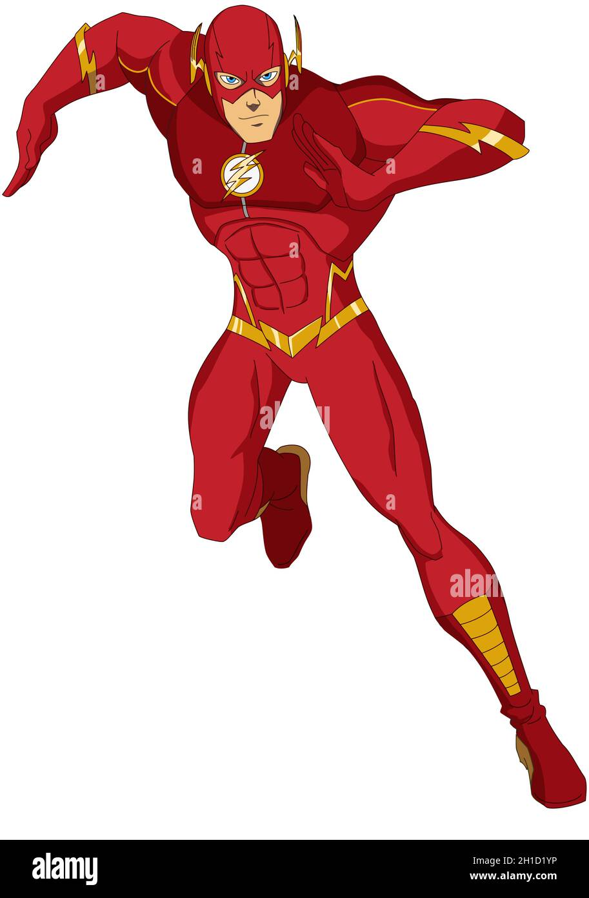

| Superhéroe | Poderes | Imagen | Biografía |
|---|---|---|---|
| Batman | Inteligencia, habilidades de detective, habilidades marciales | Más sobre Batman | |
| Alias: El Caballero Oscuro | |||
| Superman | Vuelo, super fuerza, visión de rayos X | Más sobre Superman | |
| Wonder Woman | Fuerza sobrehumana, habilidades de lucha, lazos de verdad | Más sobre Wonder Woman | |
| Flash | Velocidad sobrehumana, curvatura de tiempo |  | Más sobre Flash |
| Miembro de la La Liga de la Justicia |